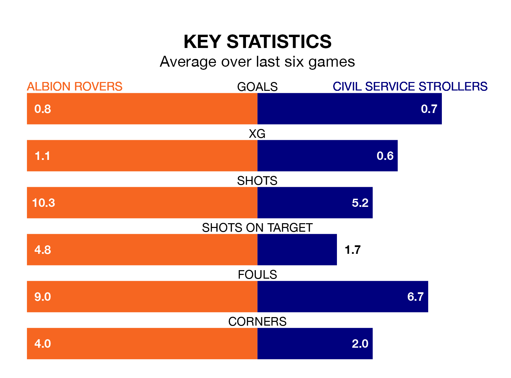

Civil Service Strollers come to the Reigart Stadium to play Albion Rovers on Saturday in poor form, having collected just four points from their last six games.
The visitors have won one and drawn one of their last six fixtures, while the Wee Rovers have a win and two draws.
With 41 goals in 31 games so far this season, Albion are scoring at below the league average rate with 1.3 goals per game. But they are conceding fewer than average too, letting in 28 goals at a rate of 0.9 per game.
Civil Service Strollers are also below average scorers, with 1.4 goals per game, compared to a league average of 1.7. They have conceded 1.3 goals per game.
Rovers are eighth in the table after 31 games, of which they have won 13 and drawn nine, earning 48 points.
The away team are two places behind the Wee Rovers in 10th, with 13 wins and six draws putting them on 45 points.
Over the last two years, Albion and Civil Service Strollers have played each other twice. Civil Service Strollers won both of them.
Their last meeting was on March 30, when Civil Service Strollers won 1-0 at home.
Albion's last match was on Wednesday, a 1-1 draw against Tranent Juniors.
Civil Service Strollers beat Albion Rovers 1-0 last time out, on March 30.
Updated: 10:01 (UTC), 12/04/24